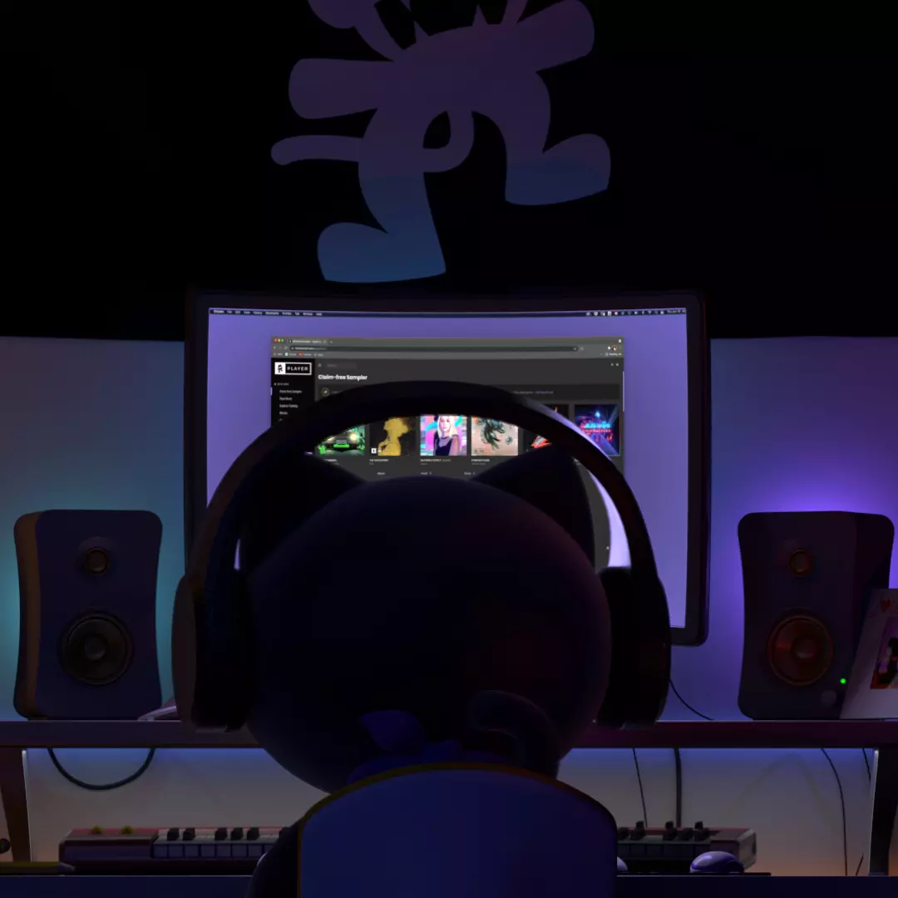

Monstercat is one of electronic music's most influential independent record labels. Founded in Waterloo, Canada in 2011, Monstercat has since expanded its global footprint with offices in Los Angeles and Singapore. Backed by passionate employees, driven artists, and the dedication of fans worldwide, Monstercat proves that independent labels have the ability to reshape and reimagine the music industry landscape.
OUR VISION
TO BUILD THE WORLD’S MOST INNOVATIVE MUSIC COMPANY, LEADING THE MOVEMENT TOWARDS ARTIST SUSTAINABILITY

WHAT WE DO
Championing a cadre of world-renowned artists, Monstercat exceeds 200 million global audio streams monthly. With six releases a week across its Uncaged, Instinct, and Silk brands, Monstercat has topped radio and streaming charts worldwide, offering a diverse range of genres across bass, dance, pop, house, chill, and electronic.
In addition to its genre-diverse music offerings, Monstercat is known for its non-exclusive record deals which allow artists flexibility and creative freedom. To further its mission of artist sustainability, the label adheres to a 50/50 split model, ensuring artists royalty payments monthly so they can work towards making a living off their music and art.
Beyond recorded music, Monstercat channels the undeniable power of its brand into apparel, live events, gaming partnerships and sync deals. Spanning over 100 events across 16 countries, Monstercat has hosted stages and shows at notable international festivals including Tomorrowland, Amsterdam Dance Event, and Miami Music Week. The label also throws its own homegrown festival, Compound, which draws thousands of fans to Vancouver in celebration of community, music, art, and more.
Monstercat’s live radio program ‘Call of the Wild’ boosts the signal even further, reaching millions of listeners weekly through its syndication partnerships across 30+ global networks, including SiriusXM and leading livestreaming platform Twitch. In 2021, the Monstercat Silk Showcase entered the fold, which features mixes from a rotating cast of artists across progressive & deep house, chillout, trance, and more. In 2020, Monstercat launched the original entertainment series, mctv, which serves as a global discovery hub for fans and a performance opportunity for artists on Monstercat's leading Twitch channel.
Within the work of sync and partnerships, Monstercat has redefined music licensing for content creators and major brands. Undertaking co-branded soundtracks, in-game activations, and collaborations with game publishers and titles including Epic/Psyonix (Fortnite, Rocket League), Roblox, Hi-Rez Studios (SMITE), Amanotes, and Beat Games (Beat Saber), Monstercat offers curated solutions that continue to excite and fuel the gaming community. Additionally, Monstercat supports content creators with its music licensing program, Monstercat Gold, which allows creators to choose from thousands of songs in the label’s ever-growing library, for claim-free use in livestream and video content.
HOW IT BEGAN
In 2011, co-founders Mike Darlington and Ari Paunonen met at the University of Waterloo, connecting over their shared love of music and entrepreneurial spirit. Noticing the steady rise of video platforms like YouTube, as well as the booming electronic music scene at the time, Mike and Ari set out to launch a boundary-pushing digital record label that would deliver high-quality, accessible electronic music. With community at the core, they built a tight-knit family of passionate artists, global music fans, avid gamers, and content creators, that came to be known as Monstercat.
COMPANY VALUES
COMMUNITY
Community is at the heart of everything we do, nurtured by an inclusive culture of collaboration, diversity, positivity, and inspiring music.
CURIOSITY
In order to grow we always ask questions, remain open to fresh perspectives, and challenge ourselves to think differently.
INTEGRITY
We hold ourselves accountable and follow through on our word, with honest and respectful communication.
TENACITY
don't fear failure. Anything is possible; if we can conceive it, we can achieve!